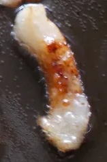

Пост дня
О нас пишут в новостях! Приготовиться к бою!!! Как правильно сделать шкварки?, 12.12.2019 14:30

Шкварки — сильно прожаренные кусочки сала, которые хрустят и придают незабываемый копченый аромат любым блюдам, в которых используются.
Ссылка на новостьЯ глава сопротивления!

В горячей точке, во время битве у реки Камышовой, моя рота потерпела поражение и была уничтожена людьми. Израненная я бежала, чтобы отомстить.
Другие посты


Как спалить технику соседа? Можно использовать в качестве вывода из строя электроники людей.
Ссылка на новость